(
invisible
)
matters
A spatial investigation into dark kitchens, platform visibility, and the infrastructure of food delivery.
“Our present mirrors the past; and the mirror foretells, augurs, and predicts, and so, makes the world.”
Nora N. Khan Mirror Stage: Selected Essays (2024)
VIDEO PLACEHOLDER
HARMFUL CONTENT FOUND
Add the final screen recording later.
What happens when the logic of a dataset begins to shape everyday urban life?
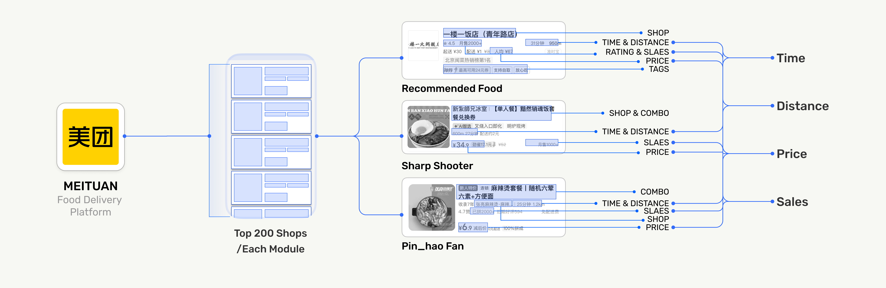
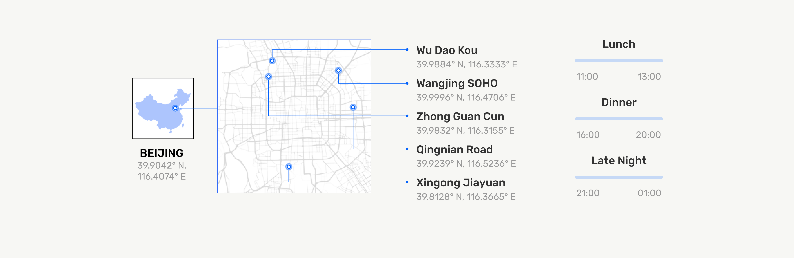
5 ADDRESSES × 3 MODULES × TOP 200 LISTINGS × 3 TIME PERIODS
= 9,000
TOTAL LISTINGS
PLATFORM EVIDENCE / LUNCH
ALL LOCATIONS
Recommendation
DISPLAYED PRICE
—
DELIVERY DISTANCE
—
DELIVERY TIME
—
DISPLAYED SALES
—
Shen Qiang Shou
DISPLAYED PRICE
—
DELIVERY DISTANCE
—
DELIVERY TIME
—
DISPLAYED SALES
—
Pin Hao Fan
DISPLAYED PRICE
—
DELIVERY DISTANCE
—
DELIVERY TIME
—
DISPLAYED SALES
—
DISPLAYED PRICE
RMB
DELIVERY DISTANCE
METERS
DELIVERY TIME
MINUTES
DISPLAYED SALES
PLATFORM VALUE
Switch between module profiles and metric comparisons while keeping the selected location fixed.
Platforms do not neutrally display which restaurants exist. They make visible the restaurants that best fit their own rules.
TRANSACTION EVIDENCE
THE SAME MEAL, DIFFERENT PLATFORM ENTRANCES
RECOMMENDATION
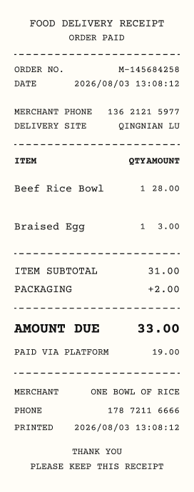
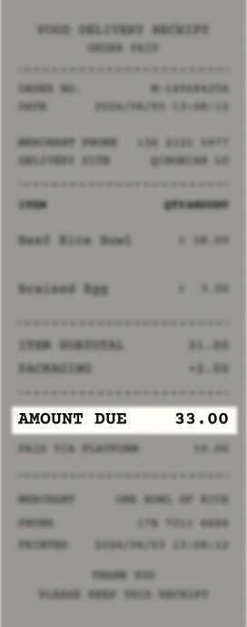
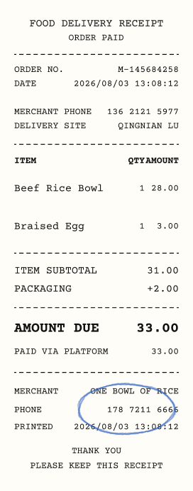
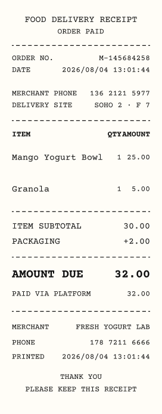
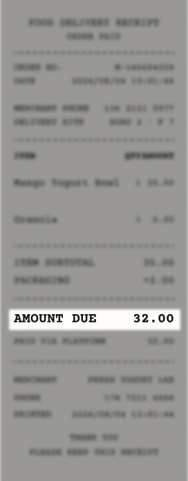
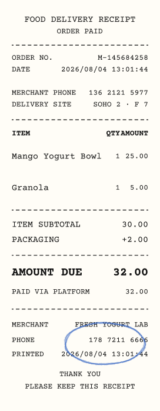
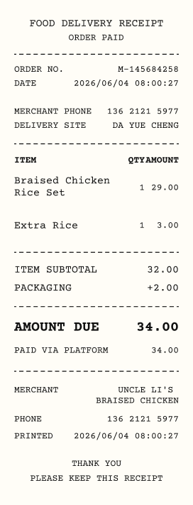
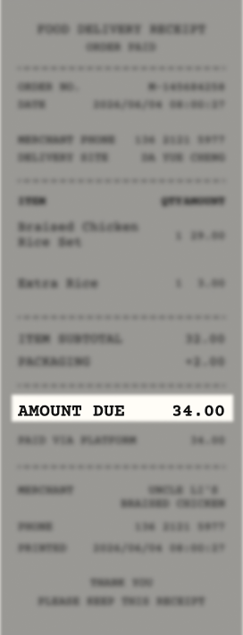
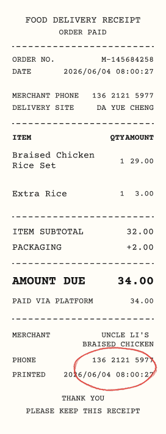
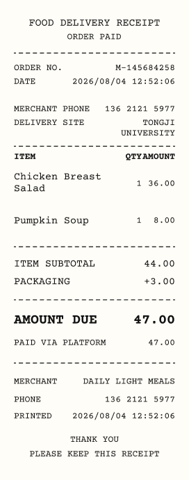
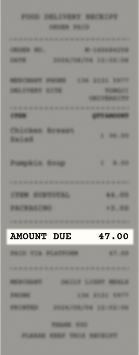
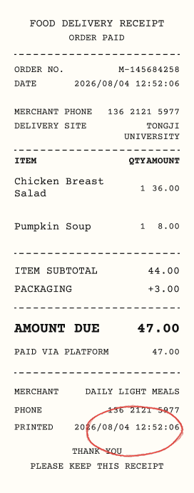
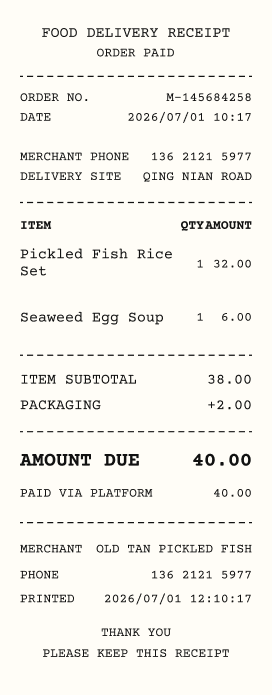
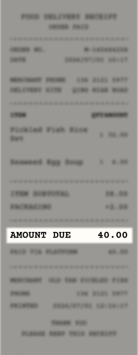
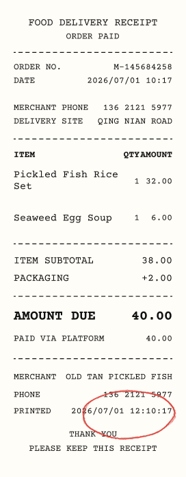
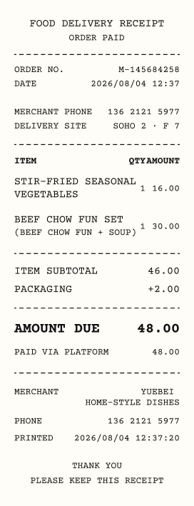
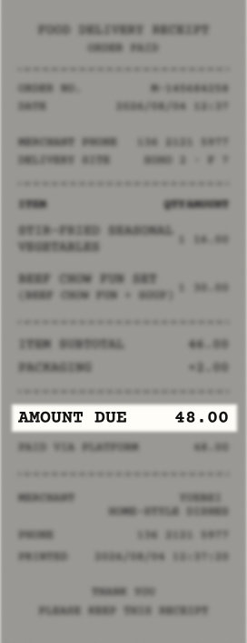
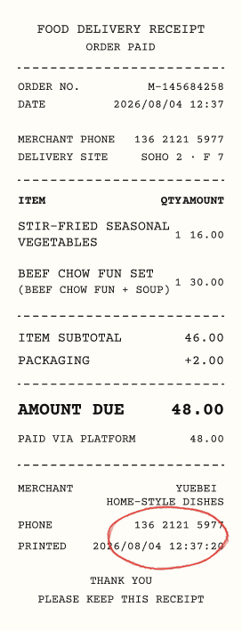
PIN HAO FAN
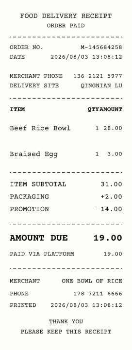
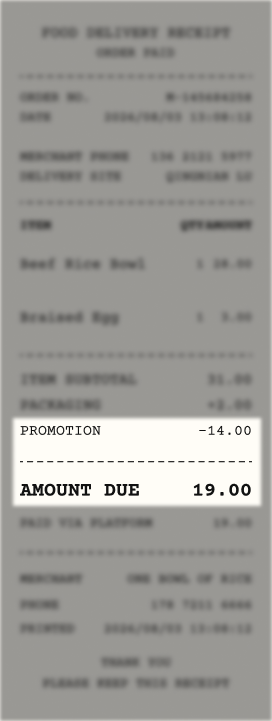
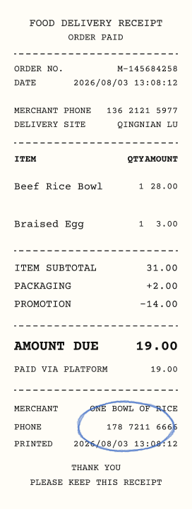
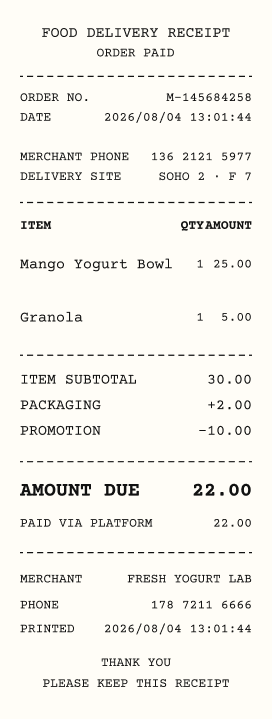
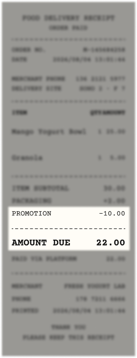
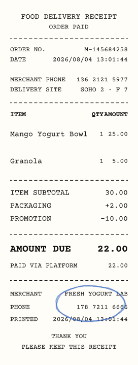
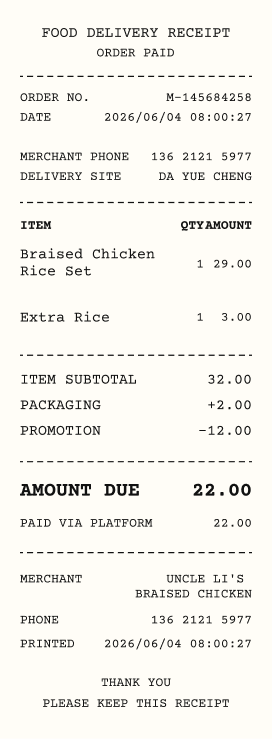
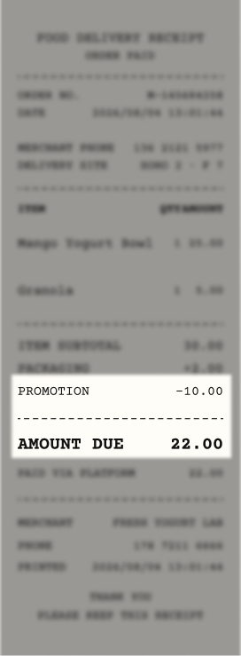
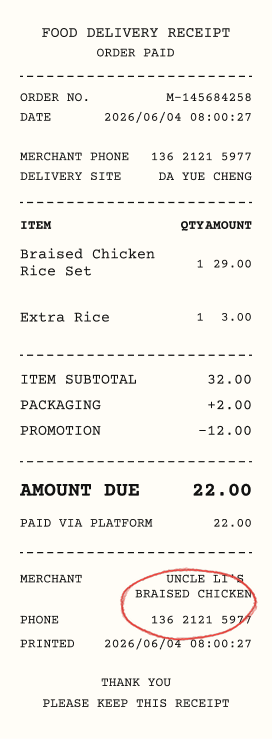
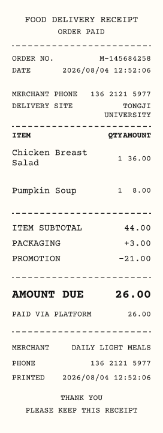
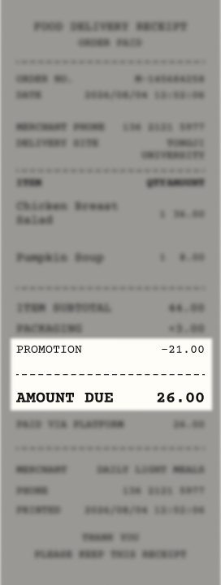
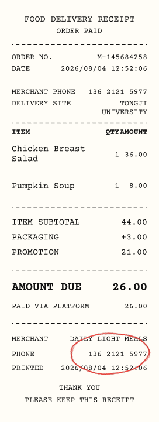
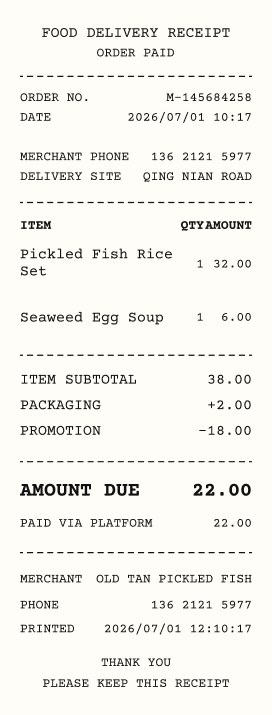
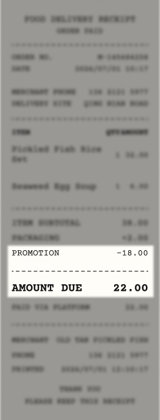
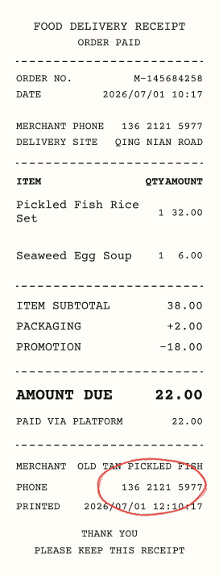
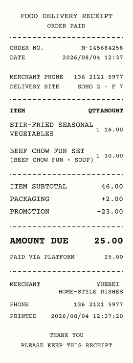
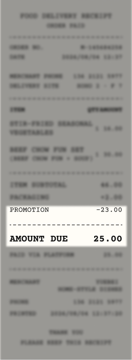
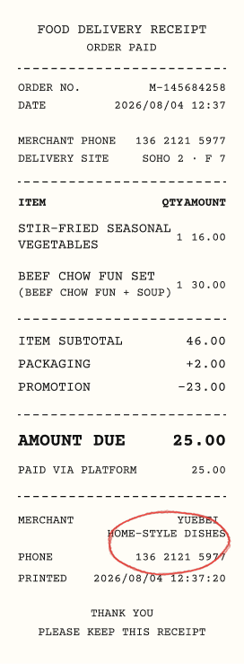
The receipts reveal two different operations behind the platform interface.
What the platform rewards and does not reward
WHAT THE PLATFORM REWARDS
What remains visible to the system
- 01Low displayed price
- 02High sales volume
- 03Short delivery time
- 04Wide delivery reach
- 05Promotional performance
WHAT THE PLATFORM DOES NOT REWARD
What remains invisible to the platform
- 01Dining space
- 02Street visibility
- 03Customer access
- 04Interior experience
- 05A recognizable storefront
03 / DARK KITCHENS
FIELD EVIDENCE + SPATIAL TYPOLOGIES
Typology diagrams and field photographs will form an interactive evidence map here.
Dark kitchens are ordinary urban spaces reorganized for platform-based food production.
04 / PROJECT DEMO
SCREEN RECORDING PLACEHOLDER
Add the final walkthrough video here.
The demo turns platform traces and spatial clues into a reviewable classification workflow.
01 / FILTERING PROCESS
Potential ghost kitchens were identified by combining shared addresses, unusual building types, missing storefront images, and kitchen-only photographs.
Conventional malls, food courts, chain stores, and clearly visible storefronts were excluded, while ambiguous cases were manually reviewed.
9,652Raw restaurant listings
6,520Conventional locations excluded
591Large-mall cases excluded
1,032High-confidence shared-location candidates
932Hidden-location cases manually verified
1,964Potential ghost kitchens identified
“Artificial intelligence is both embodied and material, made from natural resources, fuel, human labor, infrastructures, logistics, histories, and classifications.”
Kate Crawford Atlas of AI (2021)
05 / NEXT RESEARCH PHASE
- Dark kitchens occupy ordinary buildings
- Multiple brands share addresses
- Production is hidden from the street
- Similar types recur across districts
- Rent and site selection
- Platform fees and margins
- Order volume and risk
- Merchant and rider conditions
- Do lower rents attract dark kitchens?
- Does foot traffic still matter?
- How do delivery zones shape location?
- Who carries the risk?
Food-delivery platforms also depend on space, rent, labor, logistics, and infrastructure.
The locations have been identified. The next phase will examine how these spaces are sustained through rent, platform fees, order volume, labor conditions, and the distribution of risk across merchants, workers, and platforms.